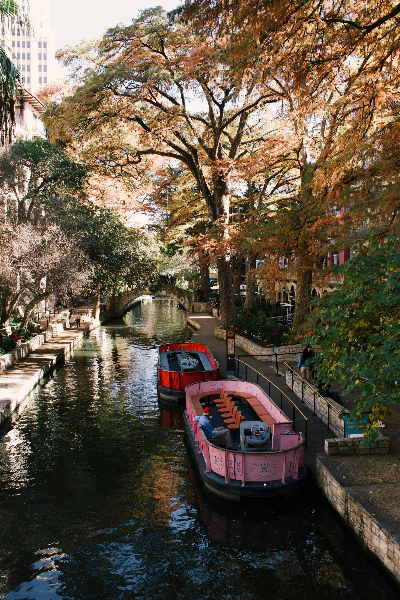
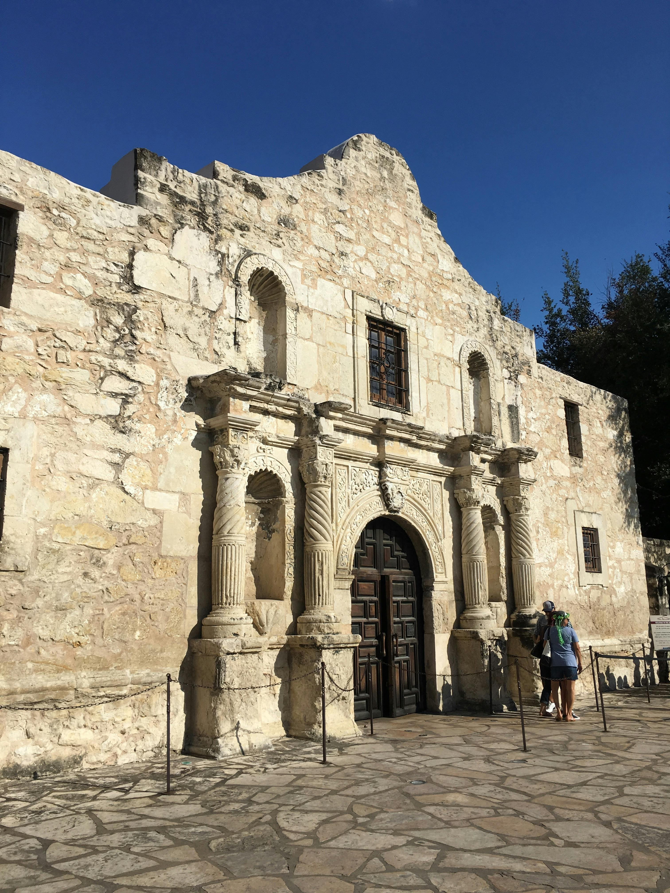
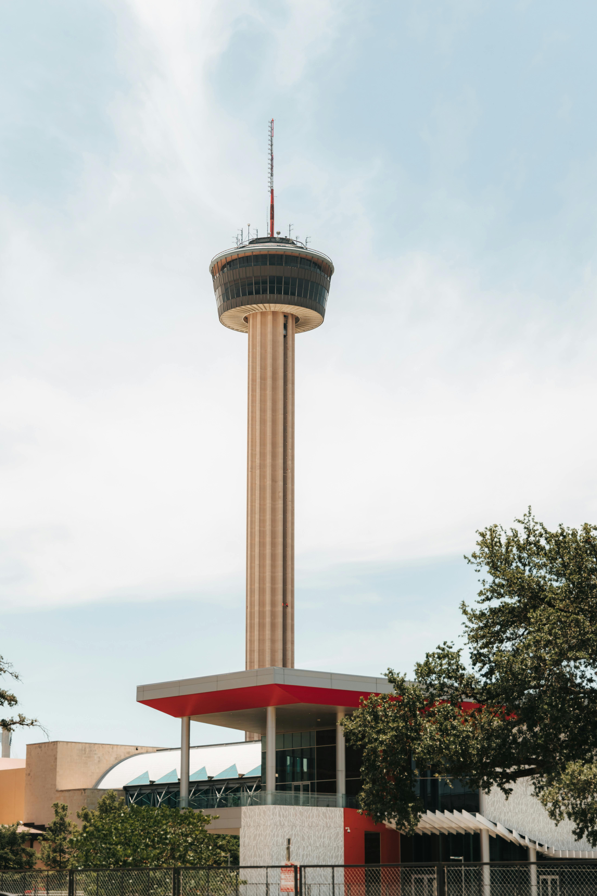

Discover San Antonio
San Antonio is known for its rich history, beautiful River Walk, and cultural landmarks.
San Antonio is home to the Alamo, one of the most famous historic sites in the United States. The Alamo, originally a Spanish mission, became a symbol of Texas' fight for independence from Mexico during the 1836 Battle of the Alamo. Today, it is a popular tourist attraction, drawing millions of visitors each year who come to learn about Texas history and the legendary stand of its defenders.
Discover the city's unique blend of Spanish heritage and modern attractions!
| Population | Year Incorporated | Region | Classification | Average Income |
|---|---|---|---|---|
| Approximately 1.45 Million | 1837 | South-Central Texas | Urban | $55,000 |